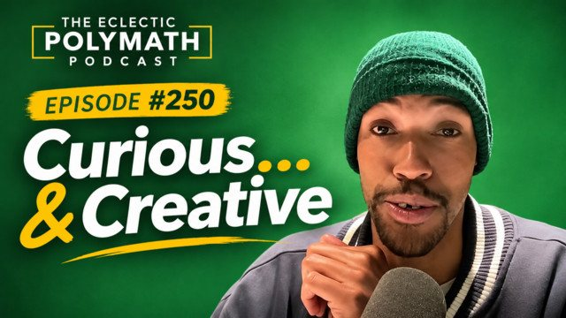
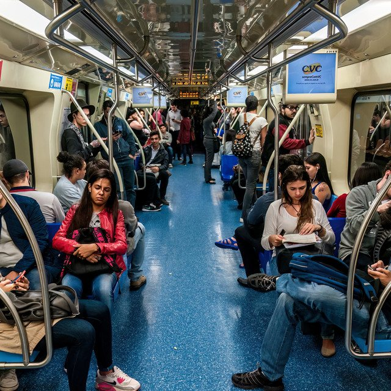

The Eclectic Polymath Podcast · Archive
#250: Curious... & Creative

About this episode
250 episodes in, and this little experiment in curiosity has grown into something much bigger than I ever imagined.
We're back for another milestone check-in, revisiting the last 50 episodes and the questions that inspired them. From William Greaves and the Harlem Renaissance to Jonathan Majors, McDonald's Monopoly, Obamacare, Anthropic, and the future of audio, it's been another stretch of unexpected rabbit holes, new discoveries, and connections I never saw coming.
But this episode is also about what's next. I'm officially introducing the Curious & Creative Network, a new home for The Eclectic Polymath and a growing collection of shows exploring news, entertainment, technology, culture, and everything in between. I share a little about what we're building, the role AI will play, and why I believe audio has such an exciting future.
Key points
- 250 episodes in, and this little experiment in curiosity has grown into something much bigger than I ever imagined.
- We're back for another milestone check-in, revisiting the last 50 episodes and the questions that inspired them.
- From William Greaves and the Harlem Renaissance to Jonathan Majors, McDonald's Monopoly, Obamacare, Anthropic, and the future of audio, it's been another stretch of unexpected rabbit holes, new discoveries, and connections I never saw coming.
- I'm officially introducing the Curious & Creative Network, a new home for The Eclectic Polymath and a growing collection of shows exploring news, entertainment, technology, culture, and everything in between.
- But 250 episodes later, the curiosity is only growing.
More like this

#249 The Audio Century: How Audio Is Replacing ScreensNovember 1, 202648:43#251 Arnold Schwarzenegger: The Recall That Invented the Celebrity CandidateNovember 7, 202656:27 #034: John Mbiti and the Debate Over African TimeMay 31, 202646:32
#034: John Mbiti and the Debate Over African TimeMay 31, 202646:32 #040: Peptides, GLP 1s, and the New Age of Body HackingJune 3, 20261:10:53
#040: Peptides, GLP 1s, and the New Age of Body HackingJune 3, 20261:10:53